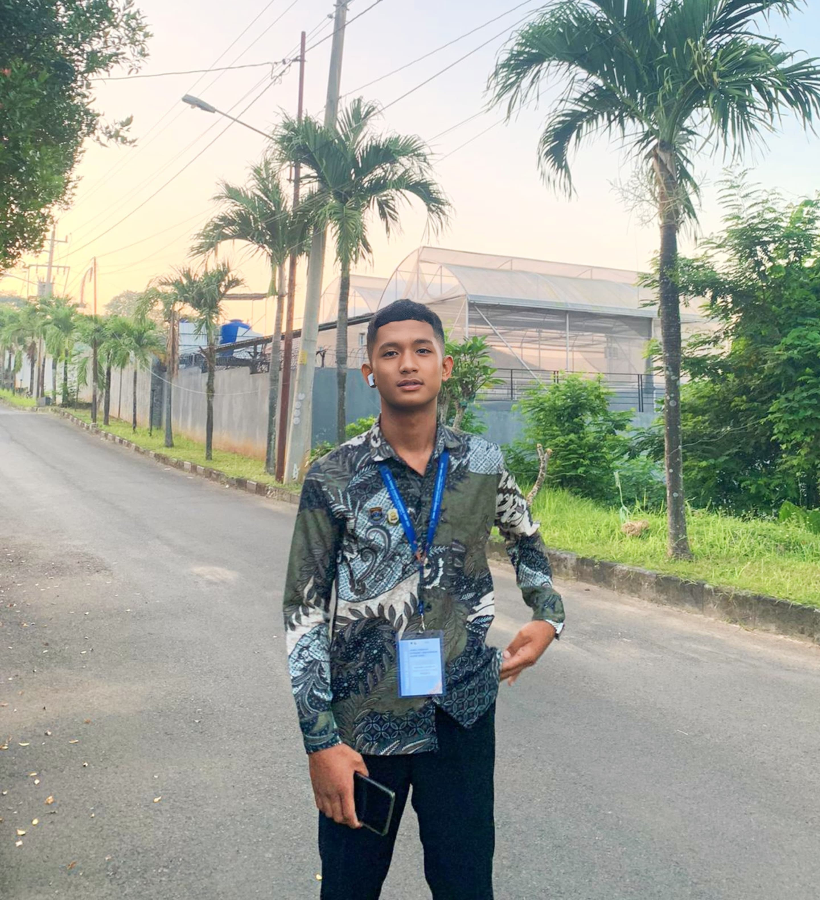

Muhamad Khusnu Marom adalah anak pertama dari tiga bersaudara. Dia dilahirkan pada tanggal 9 Februari 2006 di Demak. Saya semenjak kecil dari umur 6 tahun sudah belajar menjadi seorang leader yaitu sebagai pemimpin upacara.
Hal ini disebabkan karena pengaruh dari Ayah dan ibu saya, dimana beliau sendiri sebagai support saya. Saya sekarang sedang mendalami progammmer khususnya di back-end developer dan ikut serta dalam organisasi Mahasiswa di kampus saya yaitu Universitas Semarang.
Saat Muhamad Khusnu Marom, sedang menempuh pendidikan di Universitas Semarang di jurusan Teknologi Informasi Dan Komunikasi. Saya sudah sedikit demi sedikit belajar mengenai berbagai macam bahasa pemrograman. Saat ini saya ingin belajar menjadi seorang Full Stack Developer Semoga saya bisa menggapai cita cita saya.
Riwayat Pendidikan

Sekolah Dasar Timbulsloko 1
Sekolah Dasar | 2012 - 2018
Lulus Sebagai Siswa Teraktif
Lulus Tepat Waktu
Siswa Terajin
Sekolah Menengah Pertama 2 Sayung
Sekolah Menengah Pertama | 2018 - 2020
Lulus Sebagai Siswa Terbaik
Lulus Tepat Waktu
Tim Juara Futsal
Ketua Kelas SMP Periode 2019-2020
Sekolah Menengah Kejuruan 1 Sayung (Skansay)
Sekolah Menengah Atas | 2020 - 2023
Lulus Sebagai Siswa Terbaik
Lulus Jalur Prestasi
Lulus Sebagai Siswa Prestasi Non Akademik
Lulus Wisudawan Terbaik
Mengikuti Organisasi Osis, Pramuka, Paskibra
Menjadi Ketua Osis 2022-2023
Menjadi Wakil Ketua Osis 2020-2021
Menjadi Struktur Divisi Humas Pramuka 2020-2023
Menjadi Struktur Divisi Kedisiplinan Paskibra 2020-2023
Menjadi Ketua Umum Forum Osis Kabupaten Demak 2020-2023
Menjadi Struktur Divisi Internal Forum Osis Jawa Tengah 2020-2023
Menjadi Koodinator Daerah Demak Di Forum Osis Jawa Tengah 2020-2023
Universitas Semarang
Teknik Informatika | 2024
Mahasiswa Baru Semester 1
Mengikuti UKM Bulu Tangkis & Futsal
Mengikuti ORMA Himpunan Mahasiswa Teknologi Informasi